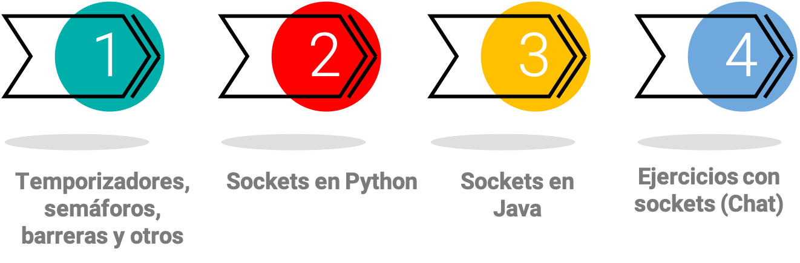
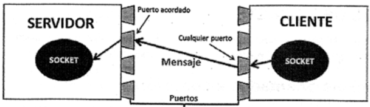
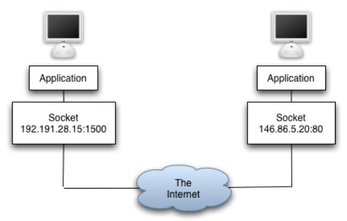
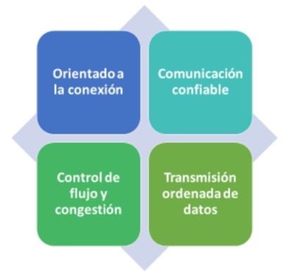
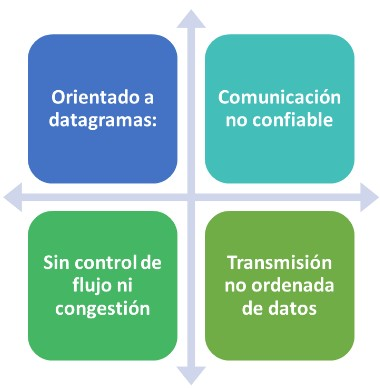
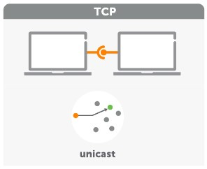
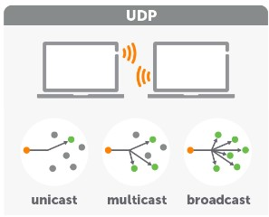

Unidad 5: Hilos 2.0 y Sockets#
Contenido de la unidad#
Hilos en Python Avanzado#
Se profundiza en el manejo de los hilos desde el lenguaje de programación Python, con las temáticas correspondientes a temporizadores, semáforos, barreras y otros.
Note
Time code
Analizar el notebook llamado HilosPython2.0.ipynb
Introducción a los sockets#
Socket: Definiciones básicas#
Un socket es un punto final en una conexión de red bidireccional que permite a dos programas comunicarse entre sí.
Los sockets se utilizan para la comunicación entre máquinas a través de una red. Incluso para la comunicación entre procesos en la misma máquina.
Tipos de sockets: TCP (Transmission Control Protocol)#
TCP es un protocolo orientado a la conexión que proporciona una comunicación confiable y ordenada entre dos programas. Algunas características clave de TCP son:

Orientado a la conexión
TCP establece una conexión entre dos puntos finales antes de comenzar a enviar datos. Los datos se envían en forma de segmentos y cada segmento tiene un número de secuencia asociado.
Comunicación confiable
TCP garantiza que todos los datos enviados llegarán al receptor. Si algún segmento se pierde o se daña durante la transmisión, TCP se encarga de retransmitir los segmentos faltantes o dañados.
Control de flujo y congestión
TCP utiliza mecanismos de control de flujo y congestión para garantizar que los datos se transmitan de manera eficiente y evitar la saturación de la red.
Transmisión ordenada de datos
TCP garantiza que los datos lleguen al receptor en el orden en que fueron enviados. Importante explicar: Streaming
Tipos de sockets: UDP (User Datagram Protocol)#
UDP es un protocolo orientado a datagramas que proporciona una comunicación no confiable y no ordenada entre dos programas. Algunas características clave de UDP son:

Orientado a datagramas
UDP envía datos en forma de datagramas independientes, sin establecer una conexión previa entre los puntos finales.
Comunicación no confiable
A diferencia de TCP, UDP no garantiza la entrega de los datos. Si un datagrama se pierde o se daña durante la transmisión, no se vuelve a enviar. Esto puede resultar en la pérdida de datos en la comunicación.
Sin control de flujo ni congestión
UDP no tiene mecanismos de control de flujo ni de congestión. Esto puede llevar a la saturación de la red si se envían grandes volúmenes de datos a través de UDP.
Transmisión no ordenada de datos
Los datagramas UDP pueden llegar al receptor en un orden diferente al que fueron enviados.
Tipos de sockets: TCP Vs UDP#
Cada uno de estos protocolos desempeña un papel fundamental en la transmisión de datos en redes, pero difieren en términos de confiabilidad, orden y priorización. Descubriremos cómo TCP ofrece una comunicación confiable y ordenada, ideal para aplicaciones como transferencia de archivos y sistemas de mensajería, mientras que UDP se destaca por su velocidad y baja latencia, siendo la elección preferida para aplicaciones de transmisión de video y audio en tiempo real.
TCP
TCP es un protocolo adecuado cuando se requiere una comunicación confiable y ordenada entre dos programas, como en aplicaciones de transferencia de archivos o sistemas de mensajería. 
UDP
UDP es más adecuado cuando la velocidad y la baja latencia son más importantes que la confiabilidad y el orden, como en aplicaciones de transmisión de video o audio en tiempo real. 
Ejemplo básico de Sockets en Python#
En este notebook, exploraremos el mundo de la programación de sockets en Python, una parte fundamental para establecer comunicación en redes. Comenzaremos con la definición del socket servidor, donde aprenderás cómo crear un socket orientado a la conexión utilizando la biblioteca socket de Python. Aprenderás sobre los dominios de dirección y los tipos de sockets, y cómo utilizarlos para crear un socket TCP.
Luego, nos sumergiremos en la creación del socket cliente, donde te mostraremos cómo establecer una conexión con un servidor. Aprenderás a enviar y recibir datos a través del socket y cómo codificar y decodificar la información utilizando la codificación ‘utf-8’.
Este notebook te proporcionará una base sólida para comprender la comunicación en red a través de sockets en Python, una habilidad esencial en el desarrollo de aplicaciones que interactúan a través de Internet.
Note
Time code
Analizar el notebook llamado SocketsBasicoPython.ipynb
Sockets en Python Avanzado vs Implementación en JAVA#
Se presentan 4 notebooks, dos para cada lenguaje de programación, correspondientes a cliente y a servidor.
Python
Analizar los notebooks:
SocketsServerPython.ipynb
SocketsClientePython.ipynb

JAVA
Analizar los notebooks:
SocketsServerJava.ipynb
SocketsClienteJava.ipynb

Sistema de Chat con el ChatGPT#
Ahora que tal si implementamos un sistema de chat con la herramienta bien conocida ChatGPT.
Note
Time code
Analizar los notebooks:
GPTChatServer.ipynb
GPTChatClient.ipynb
Tarea Unidad 5#
Note
Realizar la Tarea Unidad 5 de esta Unidad 5.